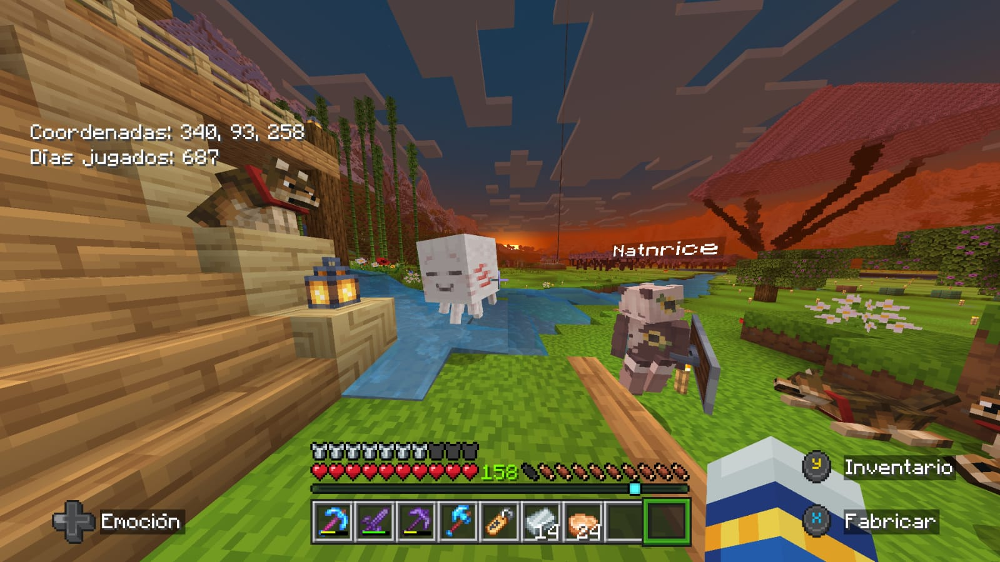
Con Xin Xin de bebeee
Una fotito con los primeros segundos de vida del pequeño y naco Xin Xin, en un atardecer lindo
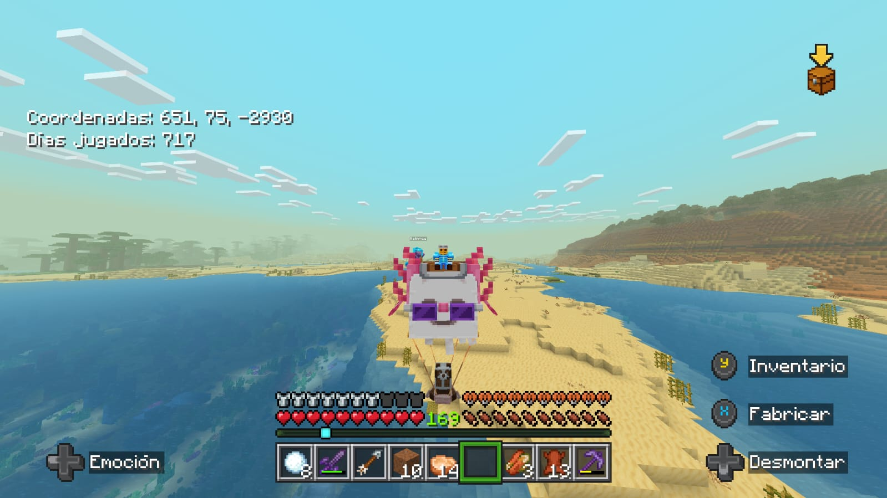
De viajeee
Aquí van a haber muchas fotos explorando por el mundo con Xin Xin, lo que me gusta al ver estas fotos es pensar en todos esos momentos de hablar de lo que sea mientras vamos volando a 2km/h porque Xin Xin va lento jiji, y abajo está Galleta de chocolateee, disfrutando el viaje de cuando lo llevamos a casita
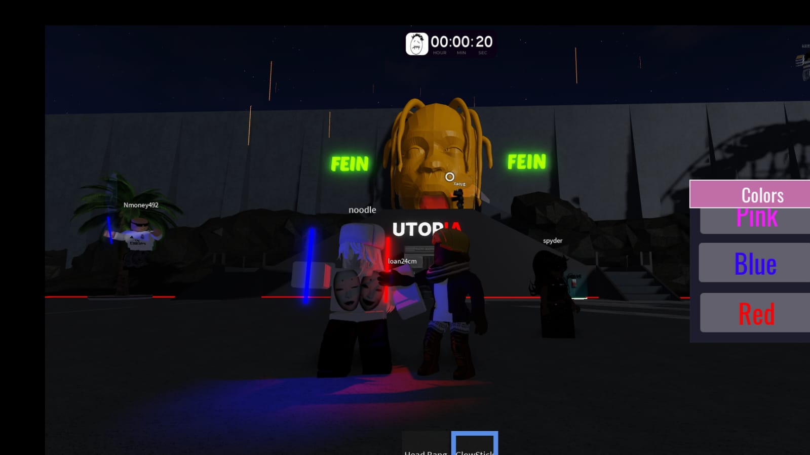
En un concierto
Jajaja una foto en el concierto de travis, ahorita es una foto en roblox, pero tenemos que recrearla en uno real
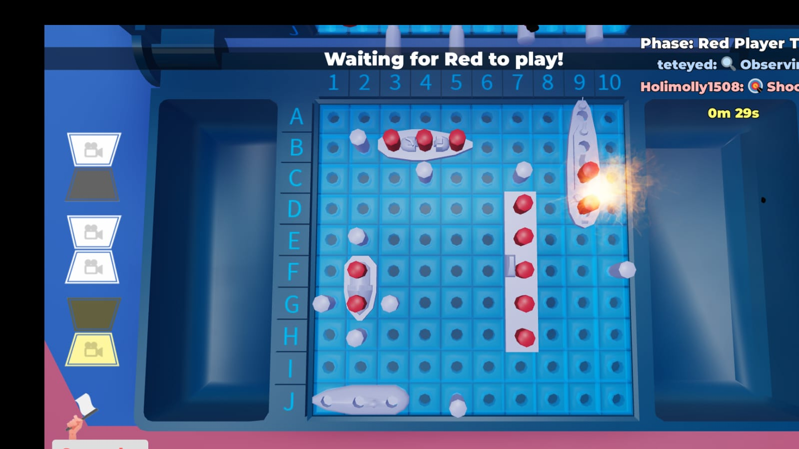
Hackeeeer
ayyyy que naquiiis, de acrodarme me dio coraje porque andabas hackeandooo, analiza bien la foto, mira mis barcos, como literalmente los rodeas perfectamente hasta encontrarlos y darle, osea que? quieres disimular según tu que no usas hacks pero se ve muy obviooo y todavía tomé la foto justo cuando me estás dando en un barco y por eso la explosión, yo digo que eres una tramposita
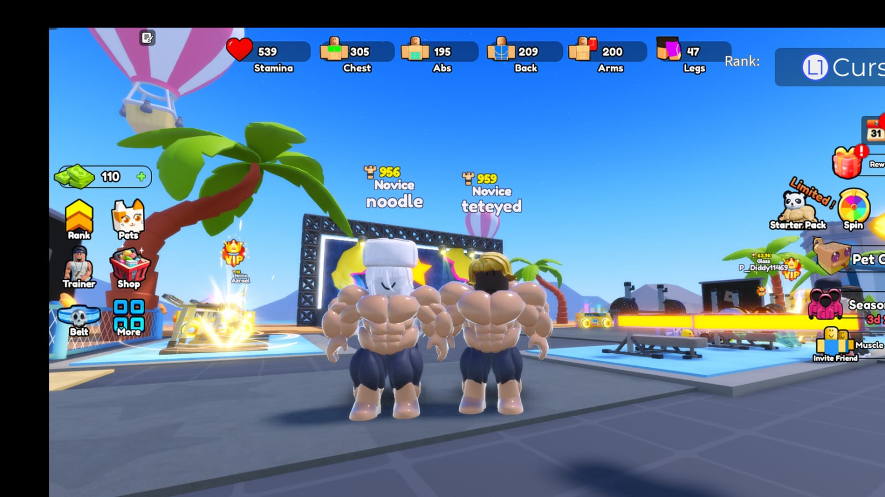
Apoco si nat?
Jajaja nos vemos chistosos aqui, yo digooooo que tenemos que recrear esta foto igual en la vida real, así de mamados, así de mamada te vas a poner verdad? jiji
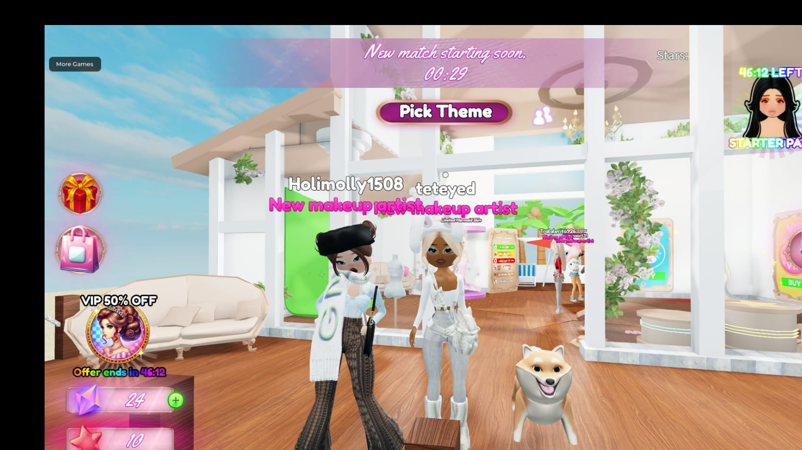
Divaaaas
Ese día dimos cátedra, clase, outfits, elegancia y devoramos eh, bien fashion las dos obviooo
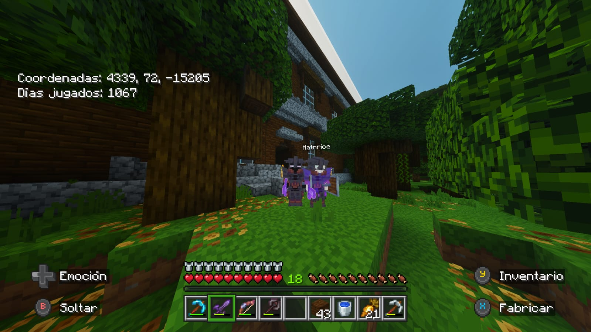
Ennn la mansión
Me acuerdo mucho de este dia porque nos dimos un viaaaajesote eh, pero me gustó todo el proceso de que primero vimos la película y aún no sabías mucho del juego y te decía asi como de esto es tal, ahí viven los pillagers, los enemigos de los villagers, y como exageraban la zona de cofres porque ya viste bien que en el juego no hay nada ahí jaja y luego como todavia te pusiste de piromana eh, creo que estuvo más padre el viaje jaja, porque si fue mucho, como 1 hora y media de ida y de regreso hablando, parece que fuimos en avión en la vida real, sólo hubiera sido mejor si le subíamos la dificultad porque asi aparecían más cosas y se sentía más peligro y que sí hubieran allays, pero ya los encontraremoooos
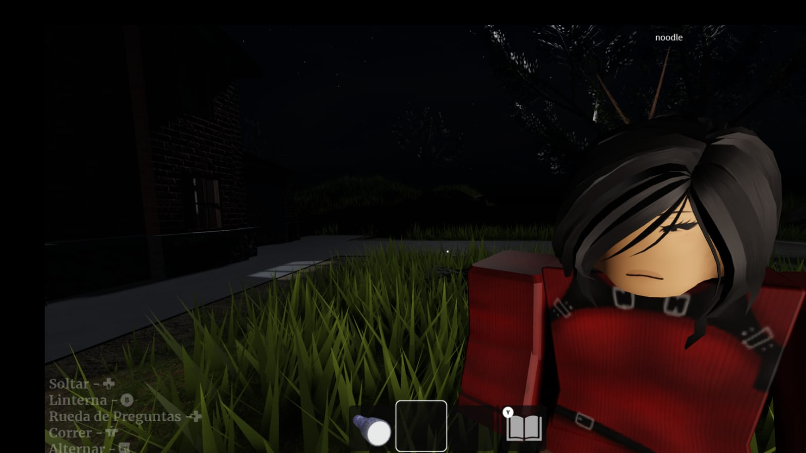
Uyyy guapa
En esta foto te ves bieeen eeeeh, me recuerda tal cual a como te ves en la vida real, de hecho también tenemos que recrear esta foto
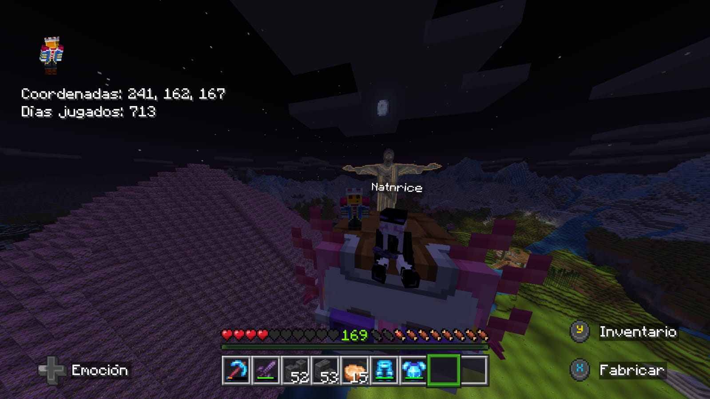
Selfiee
Está padre la foto con el cristo atrás, y me gusta esa skin que llevas, queda muy bien con la foto asi en la noche
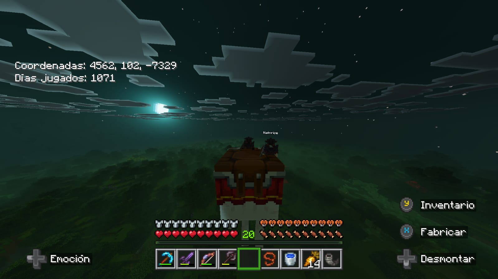
Maaas viajesitos
Ayyy de verdad que lindo son esos momentos donde podemos contarnos de todo mientras vamos viajando con Xin Xin, algún día tendremos las Elytras pero aún asi está padre poder viajar relajados viendo el mundo y hablando
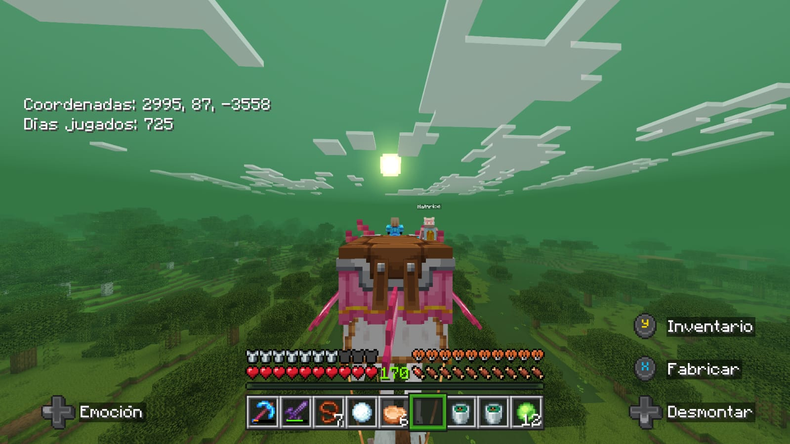
Y maaaaas viajesitos
Esta foto me encaaanta, se ve muy padre y eso que aún no estaban los efectos visuales actualizados, pero el actions hace que el pantano se vea bien, fue el día que fuimos a conocer ahí y a la casa de la bruja y conseguimos gatitos negrooos, a maggies
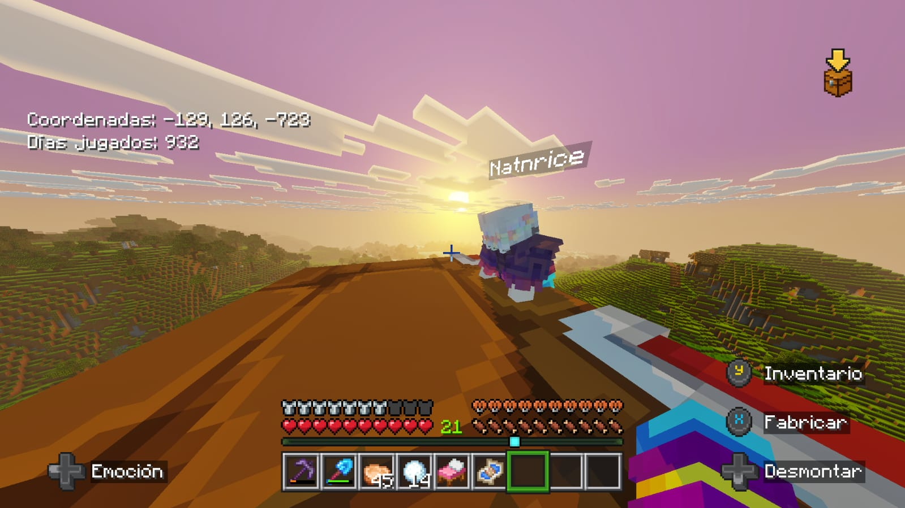
Ufffffffffff
Neni esta foto me encanta, aqui si que ya estan los graficos actualizados y se nota en el cielo, esta foto es taaaan padre y el actions haciendo que te veas asi como relajada mientras manejas, se ve tan bien todo, la subiré a ig jiji
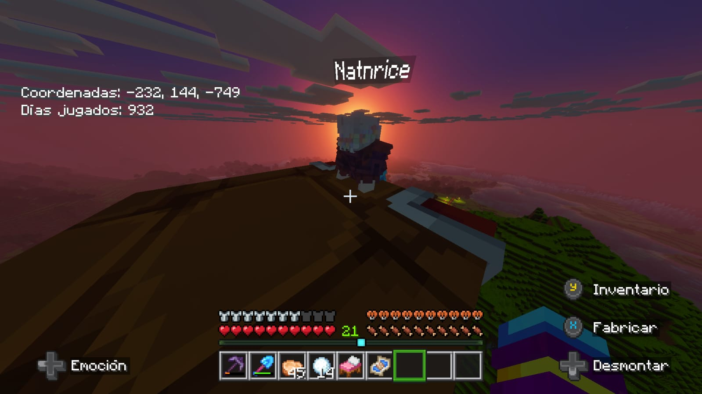
ufff
Es casi la misma foto pero mas tardecito, se sigue viendo increible todo, creo que este fue el último día que jugamos Minecraft, de verdad espero poder seguir jugandoloooo, será nuestro mundo para toda la vida, el principal, o bueno, el de nosotros dos, que tal que luego cuando tengamos hijos hacemos mundos con ellos, espero que para ese entonces te acuerdes de todos estos momentos, quiero repetirlos con ellos, y además, acuérdate de como es el juego ahorita, muy bien eh, para cuando nuestros hijos jueguen, compara que tanto ha cambiado el juego, asi me siento cuando me pongo a pensar en como era el juego hace 13 años y esos momentos, de verdad que se siente una nostalgia fuerte pero bonita